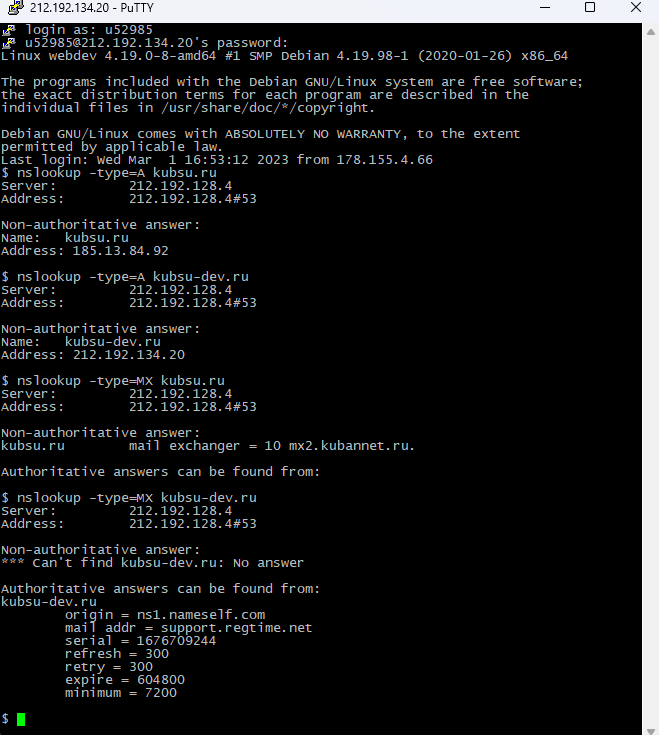

1. Команда "ping"
С помощью команды "ping" узнаём IP-адрес веб-сервера.
2. Команда "nslookup"

С помощью команды "nslookup" узнаём A-запись (указывает соответствие доменного имени и IPv4-адреса)
и MX-записи (указывает на какой адрес почтового сервера должна направлятся электронная почта) доменов.
3. Команда "whois"
С помощью команды "whois" узнаём дату регистрации домена.
(c) Кан Владимир 2022